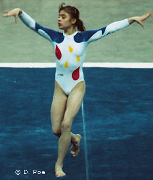

Vanda Hadarean (ROM)
1991 Jr. European AA Champion
1992 European AA Bronze Medalist

Medal Total
Olympic Games: 1
Silver
World Championships: 1 Bronze
European Championships: 1 Bronze
Vanda was born in Cluj on May 3, 1976. Her short but impressive career featured a junior European all-around title and Olympic and world titles in the team category. After retiring in 1994, she coached in Canada and the US for a while, returning to Romania in 1998. She posed nude for Romanian Playboy in September 2000 and used the money to move back to Canada. She still coaches and also takes part in fitness competitions. She represented her new country at Ms. Fitness World in Las Vegas in September 2005.
Competition Results
1990
Canadian Airlines Cup: 7th AA
Chunichi Cup: 14th AA
GBR-ROM Dual Meet: 1st Team, 4th AA (reserve)
Tokyo Cup: 1st B
1991
Gander Memorial: 3rd AA
GER-ROM Dual Meet: 1st Team, 5th AA
ITA-ROM Dual Meet: 1st Team, 3rd AA
Jr. European Championships: 1st AA, 1st UB, 4th FX, 6th B
Rome Grand Prix: 1st AA
Swiss Cup: 7th Team
World Championships: 3rd Team, 13th AA (prelims)
1992
Balkan Championships: 1st Team, 3rd AA
Cottbus International: 3rd AA, 2nd UB, 4th B
European Championships: 3rd AA, 4th B, 6th UB, 7th FX
Intl. Championships of Romania: 3rd AA, 1st B
Medico Cup: 3rd AA, 1st UB
Olympic Games: 2nd Team, 11th AA (prelims)
ROM-GER Dual Meet: 1st Team, 3rd AA
1993
American Cup: 6th AA
Gander Memorial: 7th AA
Intl. Mixed Pairs: 10th Team
ROM Championships: 4th AA
Swiss Cup: 14th Team
This page was created on September
16, 2005 and was last updated on September 27, 2015.
© Gymn Forum